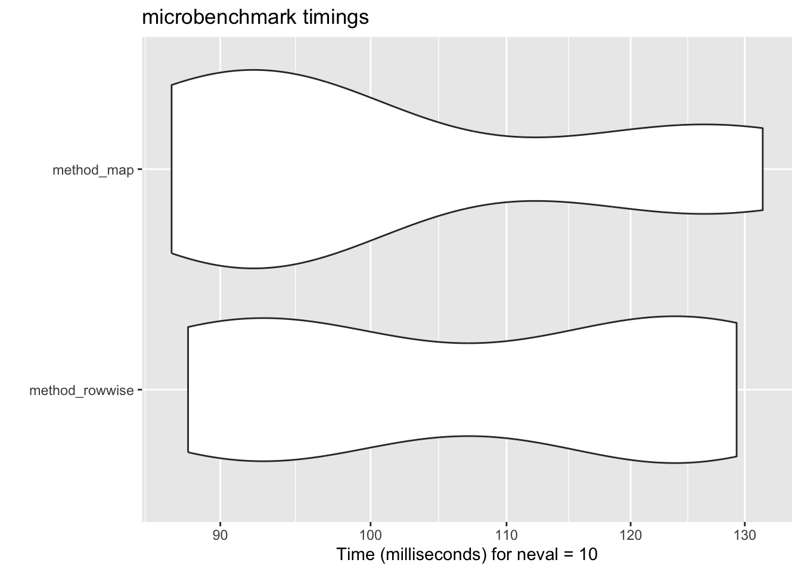

library(tidyverse)
data(flights, package = "nycflights13")20 Making R Faster 🚀
Class Objectives
- Measure your code’s speed – Know exactly how fast (or slow) your code is running
- Parallel computing magic – Get free speed boosts by using multiple CPU cores
- Turbocharge your data wrangling – Swap tidyverse functions with faster engines under the hood.
R sometimes gets a bad rap for being slower than languages like C++ or Julia. That’s partly true: if you are really serious about performance, you might want to learn another language. However, you can make R much faster without rewriting your code or learning a new language.
Let’s start by loading tidyverse and a dataset from the nycflights13 package which has more than 330,000 rows.
Note that we are not using the tidylog package this time. tidylog marks up the verbs with comments so that you know what happens in each step. This is great for understanding what the code is doing, but it slows down the execution.
20.1 Figure Out How Fast Your Code Is
20.1.1 Quick Check with tictoc
The tictoc package (no relation to social media platform) lets you time code chunks easily:
library(tictoc)
tic()
model_r2 <- flights |>
group_by(carrier, origin, year) |>
nest() |>
mutate(r2 = map_vec(data, \(x) summary(lm(arr_delay ~ dep_delay, data = x))$r.squared))
toc()- 1
- Start the timer!
- 2
-
Your code goes in between
tic()andtoc(). - 3
- Stop the timer and print the time
0.798 sec elapsed20.1.2 Compare Methods with microbenchmark
Want to test multiple approaches? microbenchmark runs code repeatedly and compares results:
library(microbenchmark)
benchmark <- microbenchmark(
method_rowwise = flights |>
group_by(carrier, origin, year) |>
nest() |>
rowwise() |>
mutate(r2 = summary(lm(arr_delay ~ dep_delay, data = data))$r.squared) |>
ungroup(),
method_map = flights |>
group_by(carrier, origin, year) |>
nest() |>
mutate(r2 = map_vec(data, \(x) summary(lm(arr_delay ~ dep_delay, data = x))$r.squared))
,
times = 10
)
print(benchmark)- 1
- Name the method on the left and the code on the right.
- 2
- Use another method
- 3
- Run each code 10 times
- 4
- Print the time it took to run each method
Unit: milliseconds
expr min lq mean median uq max neval
method_rowwise 87.98784 91.31405 108.3617 107.65704 124.0977 129.2585 10
method_map 86.97691 91.14923 102.4713 94.94475 124.1238 131.6464 10
cld
a
aIt might be helpful to visualize the results. You can use the autoplot function to do this easily.
autoplot(benchmark)
20.1.3 Estimate how long it will take to run your code
A great new feature in purrr is the introduction of .progress argument. This allows you to estimate how long it will take to run your code.
As the codes above runs very fast, we use a more time-consuming task (just for illustration purposes).
tibble(x = 1:500) |>
mutate(y = map_dbl(x, \(x) {
Sys.sleep(0.01)
x
},
.progress = TRUE))- 1
- Sleep for 0.01 seconds
- 2
- Show a progress bar
20.2 Parallel Computing
R usually uses one CPU core. But most computers have 4-8 cores! By sending the same task to multiple cores, you get automatic speedups for free!
We can use the furrr package to parallelize the map functions. When setting the number of workers, be sure to leave one core for the leader (the one that coordinates the workers).
library(furrr)
parallelly::availableCores()
plan(multisession, workers = 4)
tic()
model_r2 <- flights |>
group_by(carrier, origin, year) |>
nest() |>
mutate(r2 = future_map_dbl(data, \(x) summary(lm(arr_delay ~ dep_delay, data = x))$r.squared))
toc()- 1
- Check how many cores are available
- 2
- Set the number of workers to 4
system
11
6.091 sec elapsedThe syntax is almost identical to purrr, just replace map with future_map (you can even use the .progress argument to show a progress bar), and set before the code how many cores you want to use (set it lower than the number of cores on your computer).
Note: Parallelizing adds some overhead (think of the leader needs time to coordinate the workers). Thus, it may cost more time than the non-parallelized version for small datasets or quick calculations.
The magic of
mirai
This is a feature in development version of purrr (version 1.0.4.0). However, I have little doubt that it will be merged into the main version anytime soon: it is so much easier to use with and is up to 1000 times faster compared to furrr.
To try it out, you need to install the development versions of purrr and mirai:
pak::pak("tidyverse/purrr")
pak::pak("shikokuchuo/mirai")Then we simply need to add .parallel = TRUE to the map function.
library(purrr)
library(mirai)
mirai::daemons(4)
tic()
model_r2 <- flights |>
group_by(carrier, origin, year) |>
nest() |>
mutate(r2 = map(data,
\(x) x$arr_delay - x$dep_delay,
.parallel = TRUE))
toc()- 1
- Set the number of cores you want to use
- 2
-
Add
.parallel = TRUEto themapfunction
[1] 4
0.381 sec elapsed20.3 Swap Tidyverse for Speed Demons
data.table is blazing fast but has a steep learning curve. dtplyr lets you write tidyverse code that gets translated to data.table behind the scenes:
library(dtplyr)
flights |>
lazy_dt() |>
group_by(carrier, origin, year) |>
summarise(mean_arr_delay = mean(arr_delay, na.rm = TRUE)) |>
as_tibble()- 1
- Convert the tibble to a data table
- 2
-
Use all the
dplyrfunctions you know - 3
- Convert the data table back to a tibble
DuckDB is a fast database engine, which works super well if you have a lot of data (like millions of rows). duckplyr is a package that translates dplyr code to duckdb code behind the scenes. So again, you can write as usual and do not need to worry about the underlying heavy machinery.
The messages when you load the package clealy tell you that the dplyr functions are overridden.
library(conflicted)
library(duckplyr)- 1
- Resolve conflicts
- 2
-
Load the package and override the
dplyrfunctions
✔ Overwriting dplyr methods with duckplyr methods.
ℹ Turn off with `duckplyr::methods_restore()`.Then we just do what we always do.
flights |>
group_by(carrier, origin, year) |>
summarize(mean_arr_delay = mean(arr_delay, na.rm = TRUE)) 20.4 Additional Resources
Making code faster is a very broad topic. Here are some additional resources that you need even more speed:
All of these packages are under active development, and it is hard to say which one is the best (they all have their own strengths). The good news is that they all follow the tidyverse grammar (so very mild learning curve).
20.5 Remember: Speed Isn’t Everything! 🛑
Premature optimization is the root of all evil. – Donald Knuth
Only optimize code that’s slow enough to annoy you. Focus on correctness and readability first!